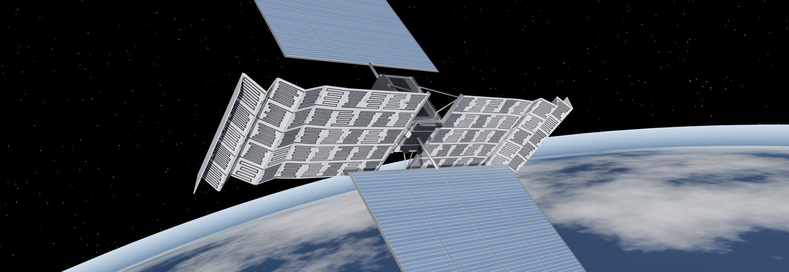

Ongoing research · IDEA Lab · poster, Oct 2026

IDEA Lab, Hanyang University ERICA · Aug 2026 – present
Conditional Diffusion Generation and Inpainting Repair of Flow-Channel Tiles for Deployable Space Radiators
MW-class orbital data centers can only reject heat by radiation, so they need thousands of square metres of radiator launched folded and deployed as tiled panels. The cooling channels inside those tiles set the radiator's thermal resistance, pressure drop and mass — and every kilogram costs about $3,400 to launch. I build the generative half of this design loop: a diffusion model conditioned on channel family and width, geometric gates that judge every tile, and a training-free inpainting repair that recovers failed tiles so they can be joined into foldable panels.
Conditional DDPMSDF Representation
Inpainting · SDEditBoundary-weighted Loss
PyTorchGenerative Design